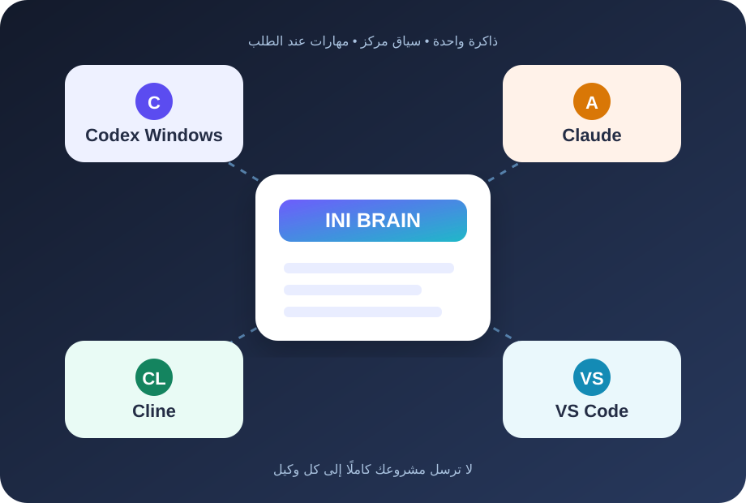
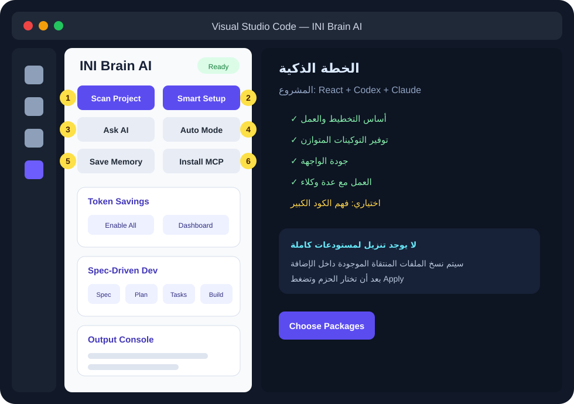

1
يفحص محليًا
يقرأ أسماء الملفات وبنيتها على جهازك. الفحص نفسه لا يستخدم نموذج AI ولا يستهلك توكينات.
دليل عربي مصور • خطوة بخطوة
INI Brain يفحص المشروع محليًا، يختصر سياقه، يحفظ قراراته، ثم يعطي Codex وClaude وCline ما يحتاجونه فقط.

تخيّل أن مشروعك حقيبة مدرسية كبيرة. بدل أن تجعل كل وكيل يفتح كل الكتب، INI Brain يصنع له ورقة صغيرة تقول: هذا المشروع، وهذه قواعده، وهذه الملفات المهمة.
يقرأ أسماء الملفات وبنيتها على جهازك. الفحص نفسه لا يستخدم نموذج AI ولا يستهلك توكينات.
ينشئ .brain وملف AGENTS.md وذاكرة وملخصًا مركزًا.
Codex وClaude وCline وغيرهم يطلبون السياق نفسه عبر MCP أو ملفات المهارات.
افتح VS Code، ثم Extensions، ثم القائمة …، ثم Install from VSIX. اختر ملف ini-brain-ai-universal-3.2.0.vsix.
من VS Code اختر File → Open Folder. يجب أن يكون كل مشروع في مجلده الخاص.
من الشريط الجانبي اضغط أيقونة INI Brain AI. ستظهر لك لوحة الأزرار.

ستُعرض خطة الحزم المناسبة. اقرأ السبب، اختر ما تريد، ثم وافق. لا يتم تنزيل مستودعات كاملة.
إذا كنت تستخدم Codex Windows أو Claude أو Cline، اتبع صفحة الوكلاء. بعد الربط سيظهر MCP باسم ini-brain-ai.
انسخ هذا النص داخل Codex أو Claude أو Cline:
ابدأ باستخدام ini_brain_auto_brief لهذه المهمة.
ثم استخدم ini_brain_get_context قبل أي تعديل.
إذا كان هذا مشروعًا جديدًا، اعرض ini_brain_smart_setup_plan ولا تطبق شيئًا قبل موافقتي.
بعد الانتهاء احفظ القرارات المهمة باستخدام ini_brain_save_memory..brain فالربط صحيح.